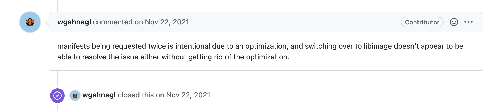

Created: 2024-04-08 Mon 12:59
An image manifest provides a configuration and set of layers for a single container image for a specific architecture and operating system.
{ "schemaVersion": 2, "mediaType": "application/vnd.oci.image.manifest.v1+json", "config": { "mediaType": "application/vnd.oci.image.config.v1+json", "size": 7023, "digest": "sha256:b5b2b2c507a0944348e0303114d8d93aaaa081732b86451d9bce1f432a537bc7" }, "layers": [ { "mediaType": "application/vnd.oci.image.layer.v1.tar+gzip", "size": 32654, "digest": "sha256:9834876dcfb05cb167a5c24953eba58c4ac89b1adf57f28f2f9d09af107ee8f0" }, { "mediaType": "application/vnd.oci.image.layer.v1.tar+gzip", "size": 16724, "digest": "sha256:3c3a4604a545cdc127456d94e421cd355bca5b528f4a9c1905b15da2eb4a4c6b" }, { "mediaType": "application/vnd.oci.image.layer.v1.tar+gzip", "size": 73109, "digest": "sha256:ec4b8955958665577945c89419d1af06b5f7636b4ac3da7f12184802ad867736" } ], "annotations": { "com.example.key1": "value1", "com.example.key2": "value2" } }
- A pull request is defined as up to two GET requests on registry manifest URLs (/v2/*/manifests/*).
- A normal image pull makes a single manifest request.
- A pull request for a multi-arch image makes two manifest requests.
HEAD requests are not counted.
– Docker, https://docs.docker.com/docker-hub/download-rate-limit/
Some clients fetch manifests twice (eg, cri-o)

X-Request-ID: <request id>
X-Forwarded-For: <ip>
authorization: Bearer <token>
accept: application/vnd.docker.distribution.manifest.v2+json
accept: application/vnd.docker.distribution.manifest.list.v2+json
accept: application/vnd.docker.distribution.manifest.v1+json
user-agent: docker/20.10.6 go/go1.13.15 git-commit/a3dc69e6b9
os/windows arch/amd64 UpstreamClient(Go-http-client/1.1)
You may have had 1000 downloads today but from only 5 distinct sources
Two users are responsible for 73,000 pulls between them, with the next 10 being responsible for 55,000 between them. Almost half of our pulls through Scarf can be attributed to 20 users with misconfigured or overly aggressive deployment/update services
- LinuxServer.io Blog
link - https://www.linuxserver.io/blog/unravelling-some-stats
| Time | Origin ID | Request Type | Path |
|---|---|---|---|
| 12:00 | abc | HEAD |
/v2/image-name/manifests/latest |
| 12:00 | abc | GET |
/v2/image-name/manifests/latest |
| 12:05 | abc | HEAD |
/v2/image-name/manifests/latest |
| 12:10 | abc | HEAD |
/v2/image-name/manifests/latest |
| 12:15 | abc | HEAD |
/v2/image-name/manifests/latest |
| 12:20 | abc | HEAD |
/v2/image-name/manifests/latest |
| Time | Origin ID | Request Type | Path |
|---|---|---|---|
| 12:00 | abc | HEAD |
/v2/image-name/manifests/latest |
| 12:00 | abc | GET |
/v2/image-name/manifests/latest |
| 12:05 | abc | HEAD |
/v2/image-name/manifests/latest |
| 12:10 | abc | HEAD |
/v2/image-name/manifests/latest |
| 12:15 | abc | HEAD |
/v2/image-name/manifests/latest |
| 12:20 | abc | HEAD |
/v2/image-name/manifests/latest |
| Time | Origin ID | Request Type | Path |
|---|---|---|---|
| 12:00 | abc | HEAD |
/v2/image-name/manifests/latest |
| 12:00 | abc | GET |
/v2/image-name/manifests/latest |
| 13:09 | abc | HEAD |
/v2/image-name/manifests/latest |
| 13:09 | abc | HEAD |
/v2/image-name/manifests/latest |
| 13:10 | abc | HEAD |
/v2/image-name/manifests/latest |
| 09:01 | abc | HEAD |
/v2/image-name/manifests/1.0.1 |
| 09:01 | abc | GET |
/v2/image-name/manifests/1.0.1 |
| 09:03 | abc | HEAD |
/v2/image-name/manifests/latest |
| 09:10 | abc | HEAD |
/v2/image-name/manifests/latest |
Let me know how it goes!
$ docker pull yourdomain.com/your-image
server {
server_name a.domain.com
listen 443;
rewrite (.*) https://registry-1.docker.io$1 permanent;
}
(to be open-sourced soon)
A general recommended approach to anyone wanting to get started building their own
distribution as a pull-through-cache when we are forced to proxyThis can be done while still completely preserving end-user privacy.
| Website | https://avi.press |
| @avi_press | |
| GitHub | aviaviavi |
| link |
| Website | https://scarf.sh |
| scarfoss | |
| GitHub | scarf-sh |
| link |